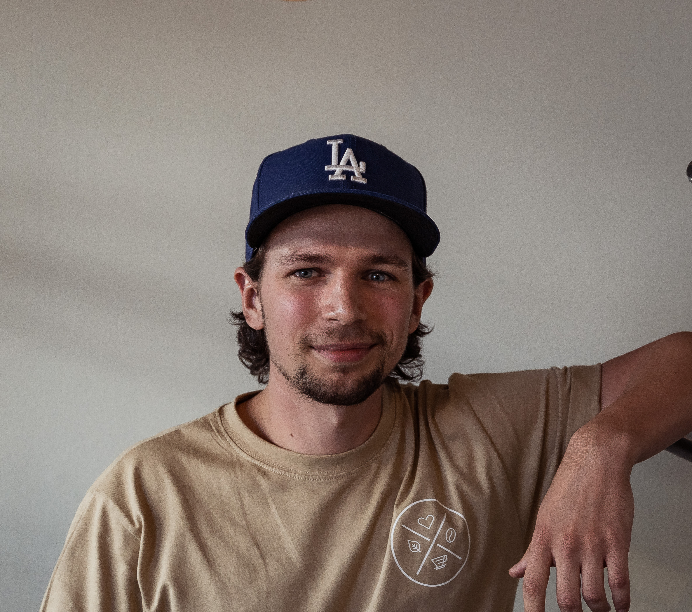

Hi, I'm Peter.
I'm a former Software Developer with a generalist education in Software Development, Design, 3D, Game Development, and Physical Prototyping.
I've been dabbling in VFX and filmmaking for as long as I can remember, long before I even started the programme.
I'm also a devoted sports enthusiast who's always been involved in sports and constantly pushes himself to improve at whatever sport is taking up his time at the moment.
That led me to playing for the Junior National Team for three years, earning a starting position during that time.